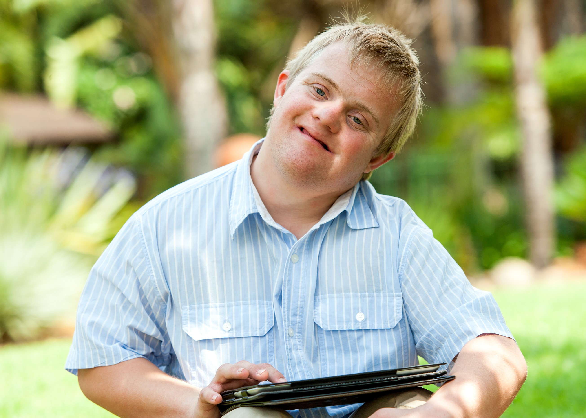
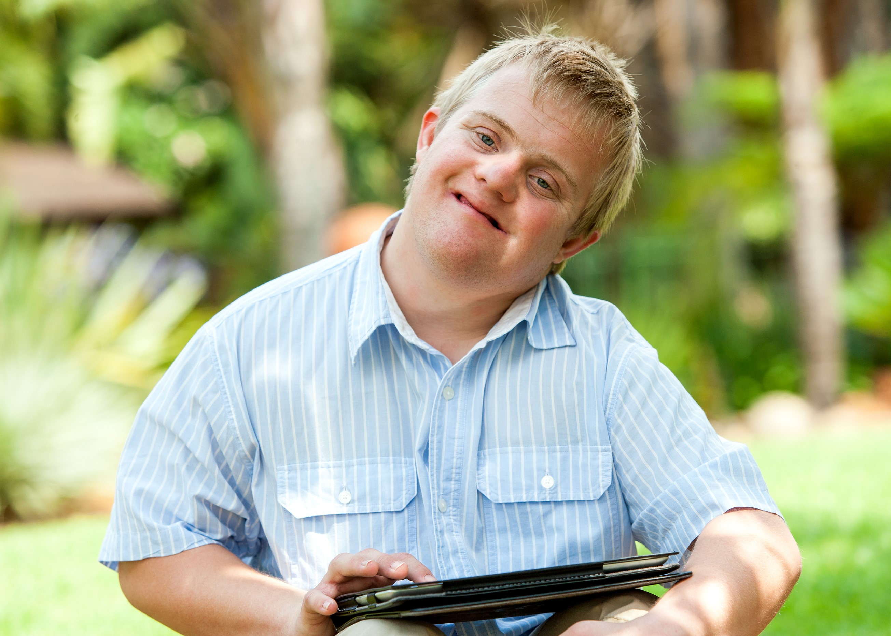

ExtraOrdinary was designed to advocate, support, and provide resources for people with special needs in communities across the country. We also aim to combat the common false stereotypes and assumptions about people with disabilities and encourage peer interaction. In schools all across America, there are roughly 6.7 million students receiving special needs education. And according to the U.S. Census Bureau, nearly 1 in 5 Americans have a disability. Together, let’s be ambassadors and friends for all members of our community!
Feel free to explore and share our website with others!
We are all proud members of Girls Who Code (GWC), an nonprofit organization designed to tackle the gender gap in technology. GWC works to help girls gain a deeper understanding of computer science and to train future female leaders in tech industries. Also, special thanks to Synchrony for hosting our GWC summer immersion program.
More information about Girls Who Code here.

The creators of this site include Aleena Rehman, Elisa Jacobo, Michelle Kee, Bobo Tam, Alyssa Matthews, and Eileen Limon. Read our bios below.